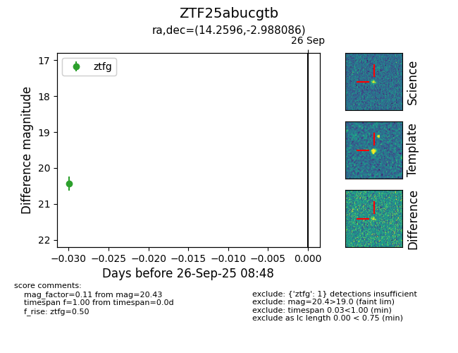

FINK: ZTF25abucgtb
Lasair: ZTF25abucgtb
ALeRCE: ZTF25abucgtb
ZTF25abucgtb (ztf,fink)
equatorial (ra, dec) = (14.2596,-2.98809)
galactic (l, b) = (126.3476,-65.82268)

last ztfg=20.43
1 ztfg detections